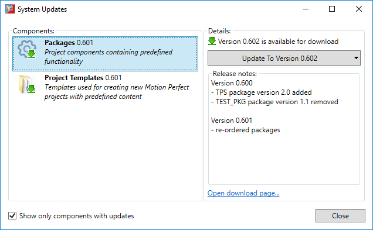
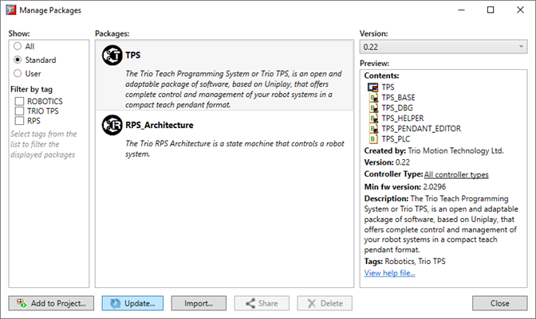
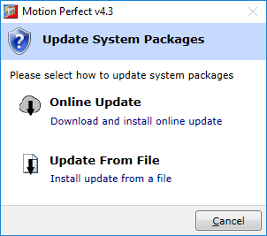
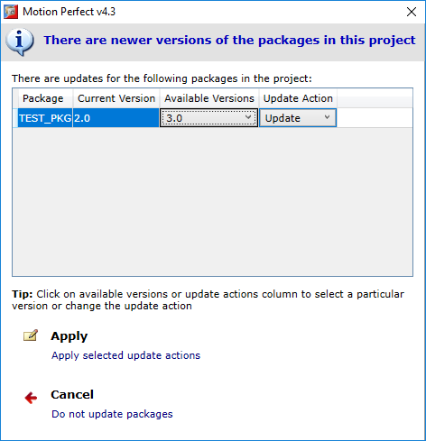
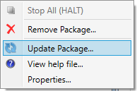

Motion Perfect has built-in support for updating packages which allows for improved maintenance and bug-fixing of existing packages. A newer version of a package may fix a problem discovered in its previous versions or may have an improved algorithm, optimized for speed or memory consumption.
Motion Perfect will automatically check for updates of installed packages at start-up and display a notification at the top right corner of the application main window, when updates are available:
When the notification is clicked it will display the updates window providing information about available updates:

The default action is to update to the latest version available. However, other options are available when pressing the right-end arrow or right-clicking on the update button.

|
Action |
Description |
|
Download and Install |
The default action. Downloads and installs the latest version of packages automatically. |
|
Download to File |
Allows the update to be downloaded to a user specified file location so it can later be manually applied. See Updating System Package Manually . |
|
Not Interested |
Motion Perfect will not display notification for this update version, until a newer version is available for download. |
Note: installing an update will not modify project contents ! For updating packages in a project, see Updating Packages In Project
Packages can be updated manually if the update file has been previously downloaded either from the System Updates window or from the download page.
To manually update packages, open the Package Manager window and click on the “Update” button.
 This will display a dialog where the update method can be selected – either online update, as described in the previous section or manual update from a file.

First option will perform quick online check for available updates for download and if there are any new updates it will ask if they should be downloaded and installed automatically.
Second option allows for selecting an update file, that has been previously downloaded.
Note : installing an update will not modify project contents! For updating packages in a project, see Updating Packages In Project
Adding a package to a project inserts the content of the package in the project. This content cannot be modified, because it is encrypted and protected.
The only way to change this content is by updating (upgrading to a more recent version or downgrading to a previous version of the package).
Upgrading or downgrading a package in a project to a newer or older version of the package will replace the existing package content.
Motion Perfect will perform an automatic check if there is a more recent version installed for all packages in a project, once the project is loaded in Motion Perfect and Motion Perfect connects in Sync mode.
If Motion Perfect finds there is a newer version of a package in the project, it will display the following dialog

The dialog displays a list with packages from the project which have available updates ( newer versions of the packages ). Each element in the list has the following properties:
|
Column |
Description |
|
Package |
The name of the package. Only packages from the project with updates are listed. |
|
Current Version |
Version of the package in the project. |
|
Available Versions |
List of versions available for the package. Might contain both higher versions and lower versions. |
|
Update Action |
Allows to update the package, ignore the update or disable future updates for the package. |
The dialog provides two possible ways to finish the update
|
Button |
Description |
|
Apply |
Selected update actions for packages in the project are applied. |
|
Cancel |
No changes to the project are made, dialog is closed. |
The possible update actions are
A package in a project can be manually updated by right-clicking on the package In Controller tree or Project tree tools and selecting “Update Package” command.

This will check if there are any other versions of the package in the installed or user packages and if a different version from the one in the project is found will display the Package Update Window.